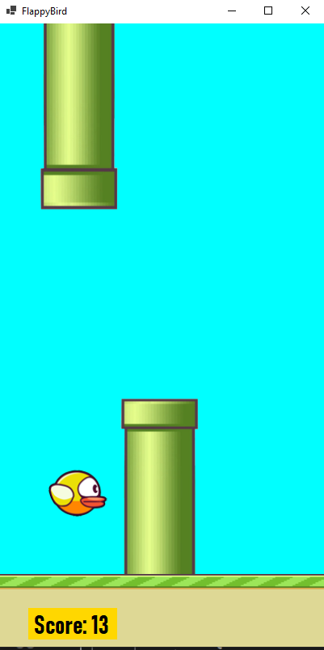
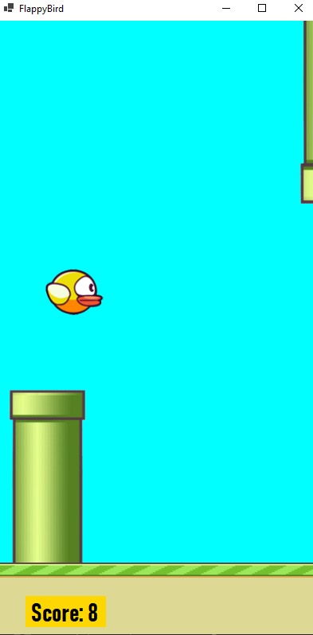
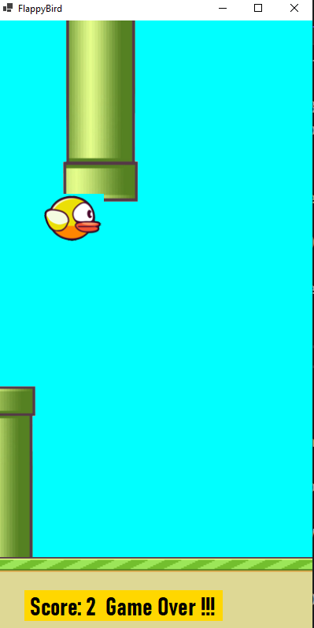

Flappy Bird

Screenshot 1

Screenshot 2

Screenshot 3
×

Gameplay Mechanics:
- One-button control scheme: players tap the screen to make the bird flap its wings and ascend.
- The main objective is to navigate the bird through gaps between pipes.
- The bird descends when not tapping the screen, simulating gravity.
Difficulty & Progression:
- The game is known for its high difficulty level.
- Pipes are set at varying heights, and the gap between them remains constant throughout a single round but can change from one round to the next.
- There are no levels; the game's difficulty remains static, but the speed can increase over time in some variations.
Scoring:
- Players earn a single point for each set of pipes they successfully pass through.
- No in-game currency or scoring modifiers.
Game Over Condition:
- The game ends when the bird collides with a pipe or the ground.
- There are no lives or second chances; any mistake ends the game.